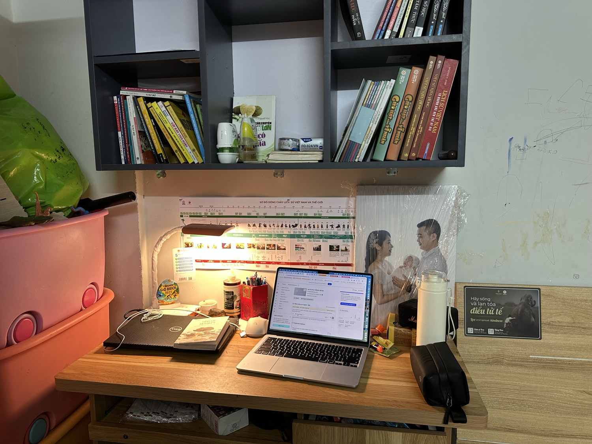

Dậy trước 6 giờ sáng: giờ duy nhất không ai đòi hỏi gì mình
Nói đến dậy sớm, người ta hay hình dung một kiểu cực hình: đồng hồ 5 giờ, ý chí sắt đá, khẩu hiệu "kỷ luật là sức mạnh".

Tôi dậy trước 6 giờ sáng nhiều năm nay, và thật lòng: nó không giống vậy chút nào. Tôi giữ nếp này không phải vì giỏi chịu khổ — mà vì phát hiện ra một điều: đó là giờ dễ chịu nhất ngày. Giờ duy nhất chưa ai đòi hỏi gì ở mình.
Một giờ trước 6h sáng của tôi trông thế nào
Không có nghi thức thần thánh nào cả. Tùy hôm, nó là một trong ba thứ:
- Xỏ giày chạy vài vòng, hoặc xuống biển — tấm ảnh đầu bài tôi chụp lúc 5 giờ 24 phút, trên một mỏm đá nhìn ra vịnh. Phần thưởng của người dậy sớm ở Nha Trang là những khung cảnh như thế, miễn phí.
- Ngồi vào góc bàn — cái bàn nhỏ kê dưới kệ sách, cạnh tấm ảnh gia đình — nghĩ cho rõ đúng MỘT việc quan trọng trong ngày, ghi ra sổ.
- Đi bộ cùng con — có giai đoạn 5 giờ 35 hai bố con ra đường, vừa đi vừa chơi trò đếm số. Con tập thể dục, bố dạy con, mà thật ra là con đang dạy bố cách bắt đầu một ngày vui.
Chọn một. Không tham cả ba. Một giờ thôi nhưng là giờ mình được toàn quyền.

Vì sao tôi giữ nếp này kể cả ngày mệt nhất
Sáng hôm sau khi chạy 35km đường núi, cơ thể tôi rã rời — nhưng đồng hồ sinh học vẫn kéo dậy sớm, và tôi vẫn ngồi vào bàn nghĩ kế hoạch tuần. Nghe hơi gàn, nhưng có lý do:
Cái đầu buổi sáng sớm là cái đầu ít bị nhiễu nhất. Chưa có tin nhắn nào tới. Chưa có việc gấp nào chen vào. Chưa ai cần mình trả lời. Những quyết định tôi đưa ra trong khung giờ đó — từ chuyện nghề, chuyện quán, đến chuyện gia đình — hầu như luôn tỉnh táo hơn quyết định lúc 9 giờ tối.
Sau giai đoạn khó khăn năm 2022, chính cái nếp này giữ tôi: ngày có thể xấu, nhưng buổi sáng thì mình luôn thắng trước đã.
Dậy sớm để làm gì — mới là câu hỏi đúng
Tôi phải nói thật điều này: dậy sớm tự nó không có giá trị gì. Dậy 5 giờ để nằm lướt điện thoại thì thà ngủ thêm cho khỏe.
Cái đáng giá là việc mình đặt vào khung giờ đó. Với tôi chỉ có ba thứ xứng đáng: vận động (cơ thể khỏe kéo cái đầu sáng), nghĩ một việc cho rõ (thay vì mười việc lơ mơ), hoặc ở cạnh người thân khi chưa ai vội. Bữa sáng cùng vợ sau buổi tập, chuyện trò với con trên đường đi bộ — những thứ đó không mua lại được vào giờ khác.
Nếu bạn không phải "người buổi sáng"
Đừng ép mình dậy 5 giờ từ ngày mai — cách đó thất bại nhanh lắm, tôi thử rồi.
Cách bền hơn: sớm hơn hiện tại đúng 20 phút, và định trước MỘT việc nhỏ cho 20 phút đó — đi bộ một vòng, viết ra một việc quan trọng nhất, hay chỉ ngồi uống cà phê không điện thoại. Giữ hai tuần. Nếu thấy ngày của mình khác đi, cơ thể sẽ tự đòi sớm hơn.
Còn câu tôi vẫn nói mỗi sáng — với chính mình trước, rồi mới với mọi người:
"Rồi, ngày mới tốt lành nhé." — Nó không phải câu chào. Nó là kết quả của một giờ tôi đã thắng.
Sống tử tế · Kiếm tiền hạnh phúc · Cho đi giá trị
Buổi sáng của bạn bắt đầu lúc mấy giờ?
Kể tôi nghe thói quen buổi sáng của bạn — tôi đọc và trả lời trên Facebook mỗi ngày (thường là... trước 6 giờ sáng).
Theo dõi trên Facebook